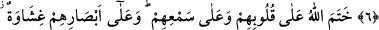
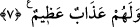

KÂFİRLER
6. Gerçek şu ki, kâfir olanları (azâb ile) korkutsan da korkutmasan da onlar için
birdir; îmân etmezler.
7. Allah onların kalblerini ve kulaklarını mühürlemiştir. Onların gözlerine de bir
çeşit perde gerilmiştir ve onlar için (dünyâ ve âhırette) büyük bir azâb vardır.
Allah Teâlâ has kullarını ve velîlerini kendilerini hidâyet ve felâha lâyık kılan
sıfatları ile andıktan hemen sonra bunun aksi sıfatlara sâhib, hidâyetin fayda vermediği,
delîl ve tehdîdlerin kâr etmediği kâfirlerden bahsediyor. Burada Ebû Leheb, Ebû Cehil,
Velîd b. Muğîre gibi müşriklerle yahûdî ileri gelenleri ve küfründe kararlı olup îmâna
dönmeleri umulmayan bütün kâfirler kasdedilmektedir.
Küfür, sözlükte örtmek ve perdelemek demektir. Şerîatte ise Hz. Peygamber (s.a.)’in
getirdiği bilinen zarûrî bilgileri inkâr demektir. Müslüman olan kimselerin mecbûr
olmaksızın küfür sembolü olan libâslar giymesi, zünnar kuşanması ve benzeri hareketler
küfür alâmeti sayılmıştır. Çünkü bunlar tekzîbe; İlâhî ahkâmı reddetmeye delâlet
etmektedir. Hz. Peygamber (s.a.)’i tasdîk eden, onun getirdiklerine inanan kimse bu tür
bir davranış içine giremez. Çünkü zinâ, içki, kumarda olduğu gibi insanı bu tür
kıyâfetleri giymeye sevk eden bir âmil yoktur. Bunları ancak bizâtihî kâfir olan yapar.
Kur’ân’da kâfir kavramı dört değişik anlamda geçmektedir:
1- Mü’min kelimesinin zıddı olarak: “O küfredenler ve Allah’ın yolundan sapanlar,
saptıranlar muhakkak ki hidâyetten pek uzak bir dalâlete düşmüşlerdir.”
(Muhammed, 47/1)
2- Câhıd; yâni mutlak inkâr eden anlamında: “Kim de küfrederse bilsin ki Allah,
bütün âlemlerden müstağnîdir. Hiç kimsenin bir şeyine muhtaç değildir.” (Âl-i
İmrân, 3/97)
3- Şükrün zıddı, nankörlük anlamında: “Bana şükredin, küfredip nankörlükte
bulunmayın.” (el-Bakara, 2/152)
4- Teberrî, yâni uzaklaşma anlamında: “Sonra kıyâmet gününde biriniz diğerinden
teberrî eder; yâni arkadaşıyla alâkası olmadığını beyân ile ondan ayrılmak ister.”
(el-Ankebût, 29/25) et-Teysîr isimli eserde böyle gelmiştir.
İmâm Bağavî der ki: Küfür dört türlüdür:
1- İnkârî küfür: Allah’ın varlığını kabûl etmemek (Ateizm). Diliyle de bunu i’tirâfa
yanaşmamak.